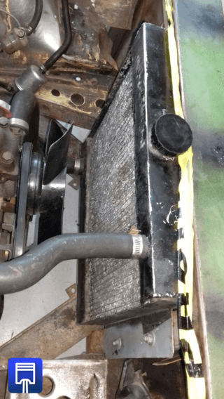
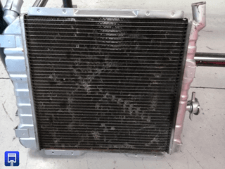
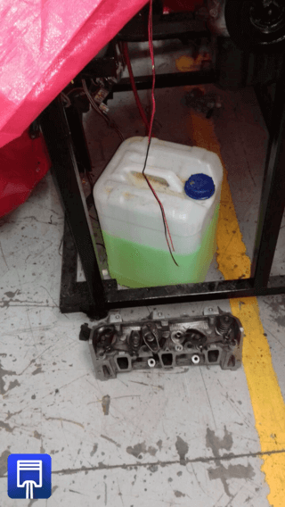

El radiador del coche, al igual que la bomba de agua, es un elemento que forma parte del sistema de
refrigeración del vehículo, pues su principal misión es la de evitar que se produzcan sobrecalentamientos en el motor para que éste trabaje
de manera óptima a cualquier nivel y ofrezca el máximo rendimiento.

Por lo general, el radiador está formado por un grupo de tubos de cobre que están situados espaciadamente y en paralelo.
Estos tubos están dotados también con un sistema de aletas que permite ampliar la superficie a través de la cual se disipa el calor.
El funcionamiento sería el siguiente, los tubos (también llamados haces) reciben el refrigerante caliente que proviene del motor a
través del tanque situado en la parte superior, y éste se enfría mediante el aire que proviene de las aletas, y es empujado a través
del ventilador.

Después, una vez frio, el refrigerante regresa a su lugar a través del tanque inferior del radiador. Para que todo este proceso
se lleve a cabo con éxito y el rendimiento del motor sea óptimo, será imprescindible que el circuito de refrigeración esté lleno.

Lo más recomendable es que se haga con una mezcla de agua y refrigerante, aunque si en algún momento se percibe que el nivel es bajo, siempre
podemos añadir un poco más de agua, teniendo en cuenta que el punto de ebullición del agua es mucho más bajo que el del refrigerante.